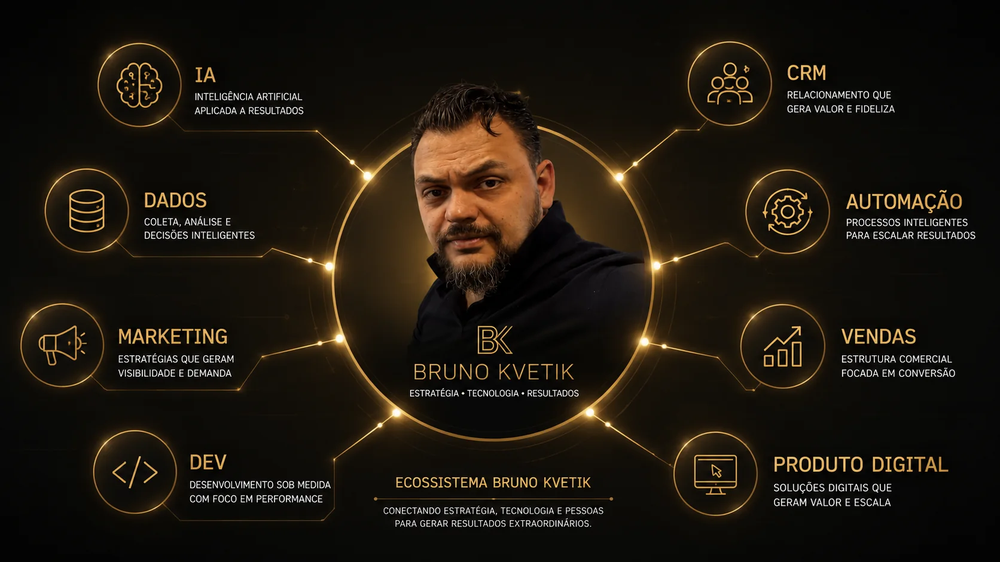
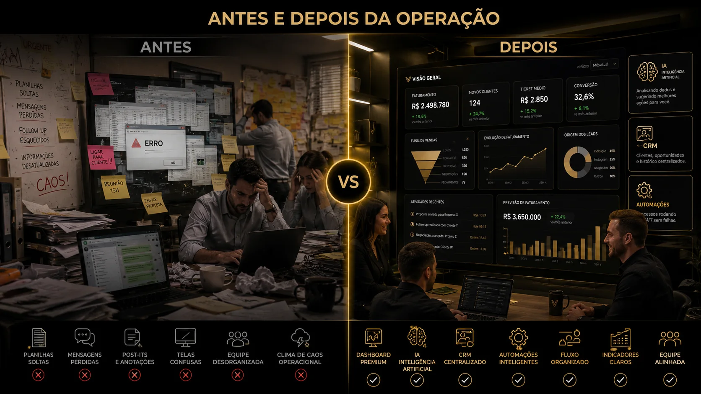
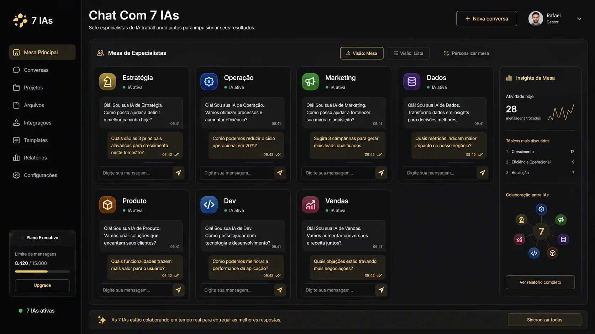

Eu entro para entender o negócio, encontrar gargalos e transformar ideia em solução: IA, dados, marketing, automação, produto digital e desenvolvimento trabalhando juntos.
É uma arquitetura de crescimento. Eu desenho o fluxo, conecto os dados, automatizo o que trava e entrego interface para o time operar.

Quem trata IA como aplicativo perde. Quem trata IA como infraestrutura ganha margem, tempo e inteligência operacional.

Automação de atendimento, análise, suporte, CRM, operação e decisão com contexto real do negócio.
Conteúdo, anúncios, criativos, páginas, funis e campanhas produzidos com velocidade e consistência.
Empresas vão operar com times menores, sistemas mais conectados e assistentes inteligentes em cada área crítica.
Uma visão por etapa: mercado, IA, dados, marketing, produto e desenvolvimento.
Depois da visão ampla, eu mostro como isso vira uma solução de nicho: imobiliárias, incorporadoras, plantões, corretores, CRM, WhatsApp, mídia, atendimento e dados trabalhando juntos.
Uma interface para conversar com IAs especialistas por nível executivo: estratégia, operação, marketing, dados, produto, dev e vendas.
